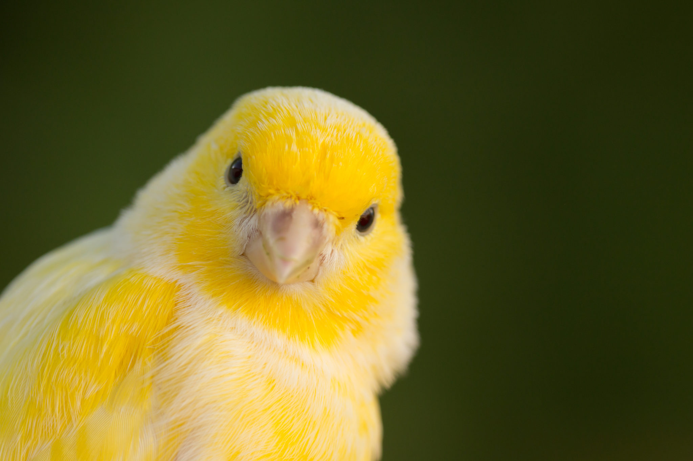
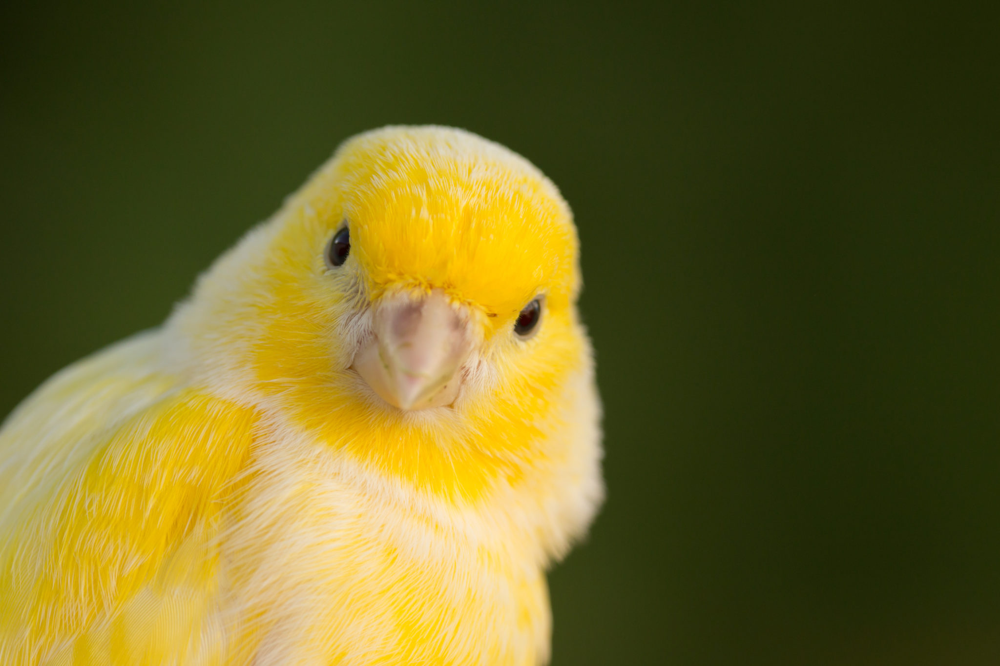
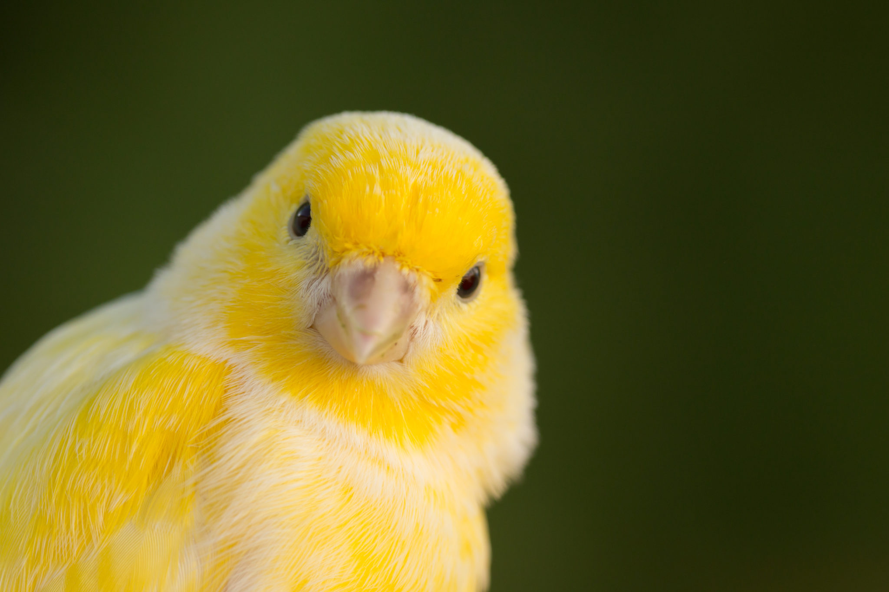
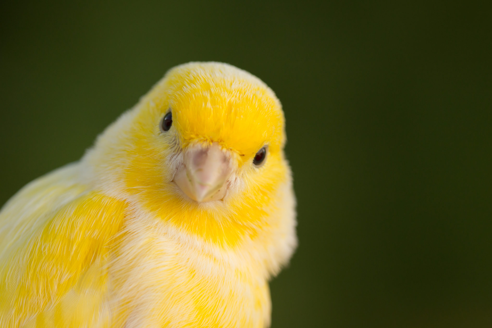
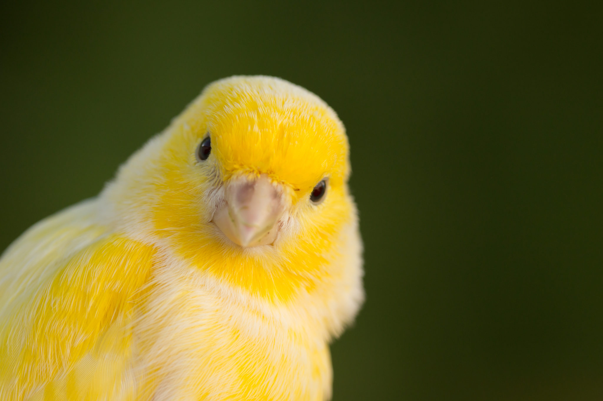

AdopteUnAmi
Accueil
Animaux
À propos
Contact
Trouver votre compagnon idéal 🐾
Type
Chat
Chien
Autre
Sexe
Mâle
Femelle
Âge
Jeune
Adulte
Senior
Taille
Petit
Moyen
Grand
Rechercher
Pourquoi adopter ? ❤️
Adopter, c'est offrir amour, sécurité et une nouvelle chance à un animal qui n'attend que vous.
❤️ Sauver une vie
🏡 Offrir un foyer aimant
🌍 Un geste responsable
🐾 Voir les animaux disponibles



 


